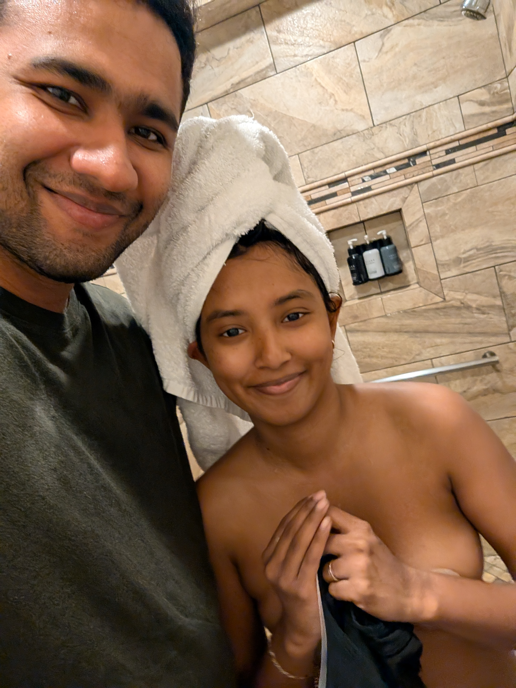
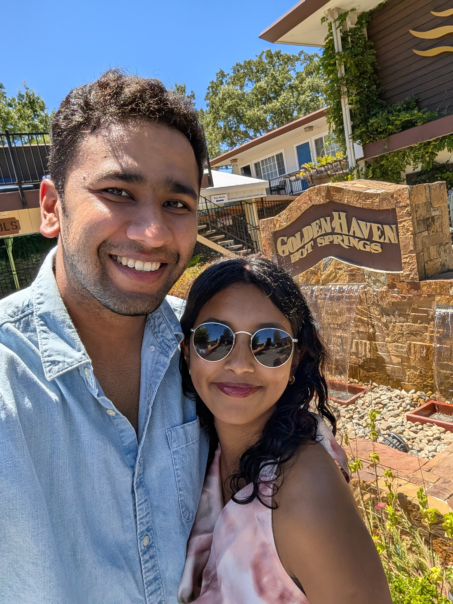
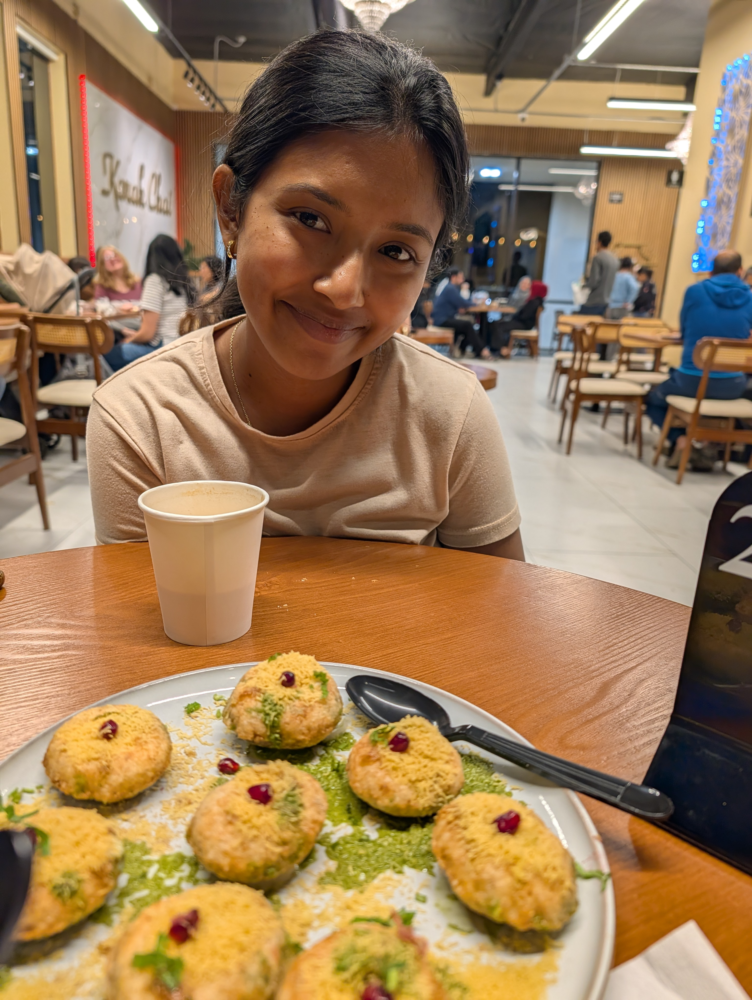
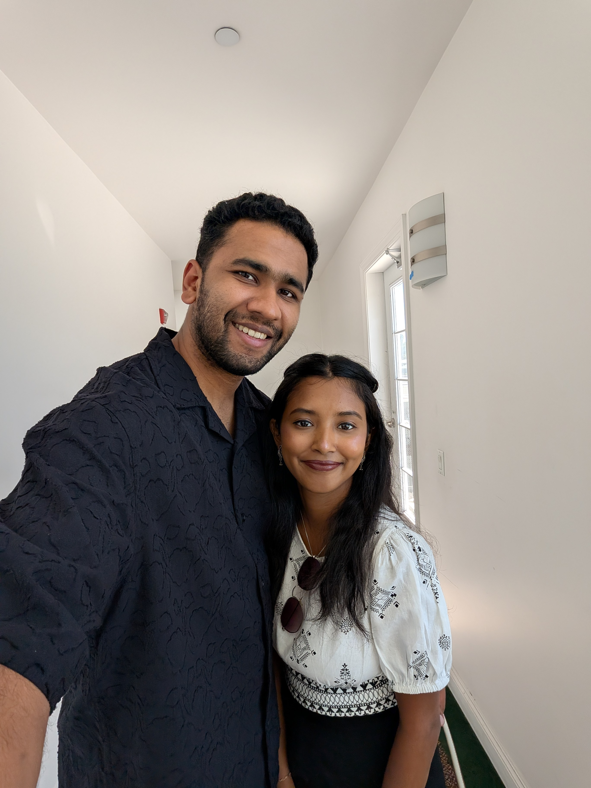
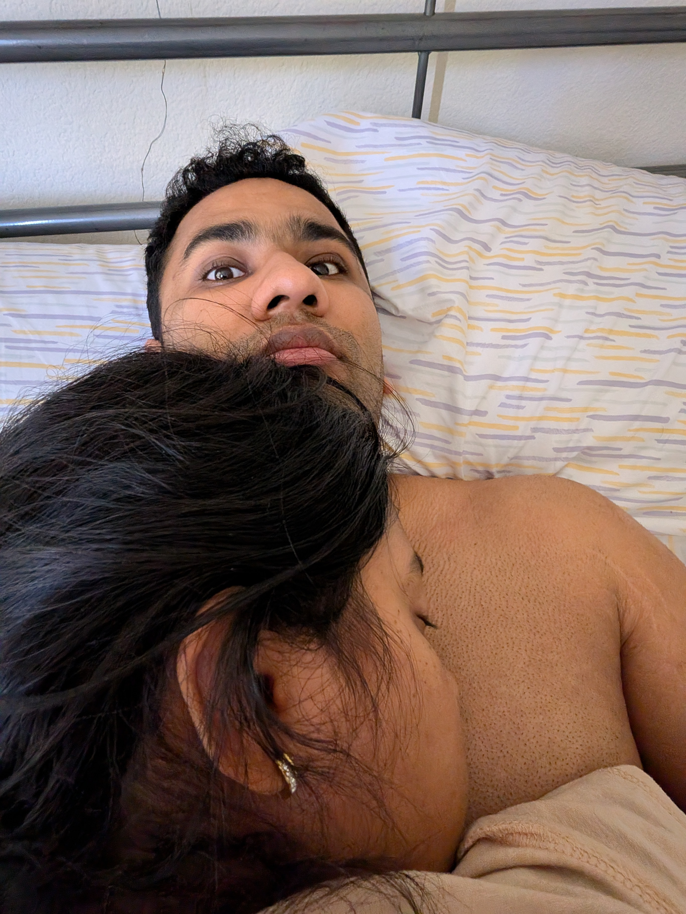
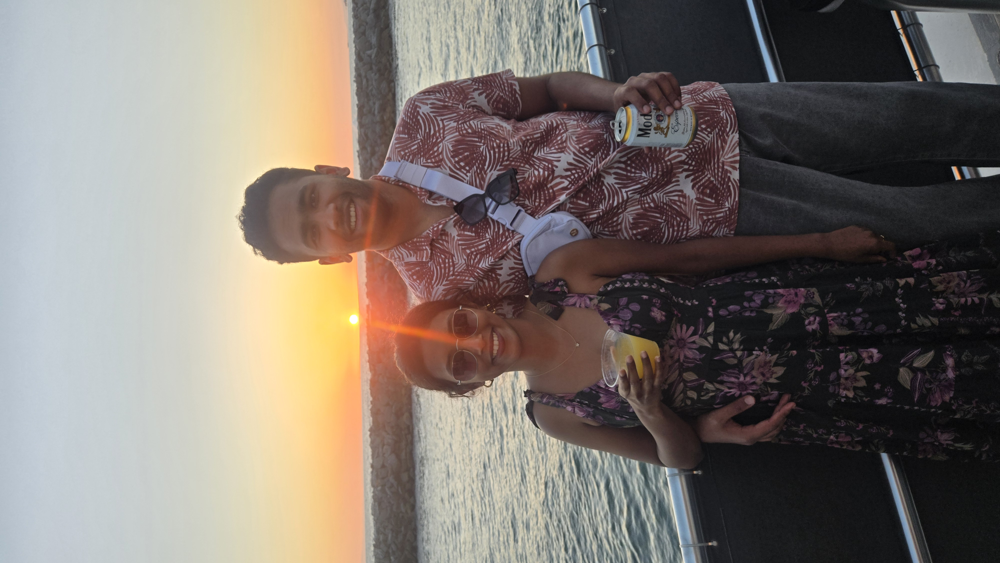
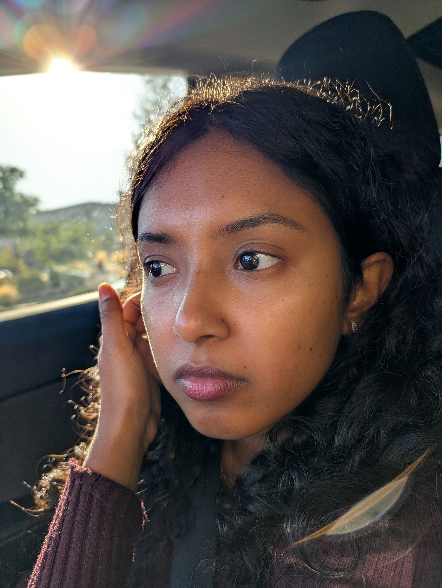

April 6, 2026 · Month Twenty-One
1 year & 9 months — and still the luckiest
I have been trying to figure out how to say this properly for a while now. Not the big things those are easy. Of course I love you. Of course you are everything. But this is about something smaller and more specific
you are genuinely the cutest human being I have ever encountered in my entire life.
And I notice it constantly. In ways you would probably belt or say ugly if I say out loud. So I'm writing them down instead. Because you deserve to know exactly what I see when I look at you.

things I notice, things you don't know I notice

21 months in and I still do a double take sometimes. Not because I've forgotten, but because I genuinely cannot believe that you are the person who decided I was worth loving.
You have this quality that is very hard to describe. You're not trying to be anything. You're just completely, effortlessly yourself — and that self happens to be the most indescribable feeling that one can be around a loved one


I keep thinking about that moment on March 8th. Not the grand version of it just the real, quiet version. The part where I looked at you and thought: there is no one else. There has never been anyone else.
And you looked back at me like you already knew. Like we'd both known for a long time and this was just finally saying it out loud in front of the sky.

I know things are still uncertain. I know the waiting is heavy. But I want to tell you something that is completely true and slightly ridiculous:
even on the hardest days, you are still the cutest person in every room you walk into. Including the rooms where you're stressed. Including the rooms where you're tired. Including every version of you that you think isn't your best one.
Those versions are my favourite ones. Because they're the most real. And I have the privilege of being the person who gets to see them.


21 months. Almost a month since the proposal. And I'm still finding new things about you that make me think — how did I get this lucky?
This one isn't about how strong you are or how hard things have been, even though both of those things are true and I mean them. This one is just about you. The small things. The real things. The things I notice when you're not trying to be anything for anyone.
You are the cutest human to exist. I need you to know that I don't say that lightly. I say it because it is accurate and I have proof of it for the last 21+ months.
I see you. Not the version you present to the world. The real one — the soft one, the silly one, the one who is quietly carrying a lot and still manages to make everything around her a little warmer.
I cannot wait to marry you. I cannot wait for all of it. But mostly I just cannot wait to keep noticing things about you for the rest of my life.